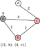
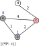
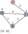
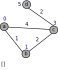

Lab 7: Dijkstra's Algorithm
Chris Tralie

Overview / Logistics
Click here to download the starter code for this lab. You'll be editing graph.py
In this lab, will implement a very important graph algorithm known as Dijkstra's algorithm, which is used to efficiently find the shortest path from a particular node start in a graph to all other nodes in the graph. Dijkstra's algorithm can be seen as a generalization of breadth-first search (BFS), where we replace the ordinary first-in-first-out (FIFO) queue that BFS uses with a min priority queue, where nodes with the min priority number come out first, regardless of when they were added to the queue. The priority of a node is what we currently believe to be the shortest distance from start to that node, though we may find shorter paths as we're going along.
Once you've gotten to work, you'll be able to find the shortest path that an ant would take to get from the tip of a thumb to the tip of the index finger, as shown in the teaser picture above.
Learning Objectives
- Implement Dijkstra's algorithm
- Use the priority queue ADT in an application
What To Submit
When you are finished, submit graph.py to canvas. Also write on canvas a response to the time complexity question.
Background
Dijkstra's algorithm is a mix of greedy and dynamic programming paradigms. It's greedy with the min priority queue that always takes out the closest vertex on the frontier first, but it uses dynamic programming to remember the shortest paths it's aware of to particular nodes. Below is the pseudocode for the algorithm(*). This should look quite familiar if you remember how BFS works
add start to the frontier with priority 0
while len(frontier) > 0
Take off the element *v* with the shortest distance *dist*
Record the shortest distance of v as dist
For each neighbor n of v in the graph
Let d' = d + w
if n has not been visited
if n is not on the frontier # Case 1
add n to the frontier with priority d'
else if d' is less than the priority of n on the frontier # Case 2
update the priority of n to be d'
(*)
Technically, we are using a better version of the algorithm known as uniform cost search, which adds nodes on the fly as they're visited, rather than adding all nodes to the queue with priority infinity to begin with, as Dijkstra originally did.
Below is an example of this algorithm in action on a small graph. Let's suppose we start at node a. We first add a to the priority queue with priority 0
Next, we commence the main loop. At this point, we remove the smallest item on the queue (a), we record its distance as 0, and then we add its two neighbors onto the queue with distances 0 + their edge length (case 1 in the pseudocode above):
Next, we remove the element with the smallest priority (b, 1), and record b's distance as 1. At this point, we update the priority of c to be 1+2, since that is less than the current priority 4. In other words, we've found a shorter path from the start node a to c than the path we were originally aware of:
Next, we take off the only element that's on the queue, c, and record its distance as 3. Finally, we add on its only neighbor that hasn't been visited, d, with a priority of 3+2
Finally, we remove (5, d) from the queue and record d's distance as 5. d has no neighbors that haven't already been visited, so we push nothing to the queue, and the queue is empty, so we break out of the loop and complete the algorithm.
Lab Tasks
Click here to download the starter code for this lab. You'll be editing graph.py, and you can test your code by running simple.py and hand.py
explore (2 Points)
Your Task: Fill in the method explore which, given the label for a vertex in the graph, computes the shortest path from that vertex to all other vertices in the graph using Dijkstra's algorithm. At the end of the method, return those distances as a dictionary, as explained in the method docstring.
If this is working properly, you should see the following when you run hand.py:
backtrace (2 Points)
In addition to computing the distance of the shortest paths from a starting vertex to all other vertices, it may be useful to return the sequence of edges along a path that achieves that distance. We can accomplish this using the same trick we used in other dynamic programming algorithms like edit distance; when you push or update a priority of a vertex n on the queue from a vertex v, store in n that v was its previous vertex. Then, trace back through these previous references until you return to the start node
Your Task: Modify your the code in your explore method to store references to previous nodes. Then, implement the backtrace method to return the sequence of vertices along the path from the starting node to some other node in the graph. If this is working properly, you should see the following when you run hand.py:
Complexity Analysis (1 Points)
Given a graph with V nodes and E edges, what is the worst-case time complexity of Dijkstra's algorithm, as described above? Provide a brief explanation as to why, citing the complexity of operations in the data structures that are used.